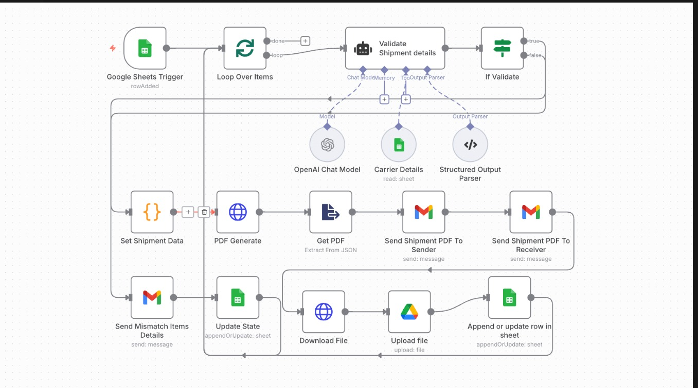
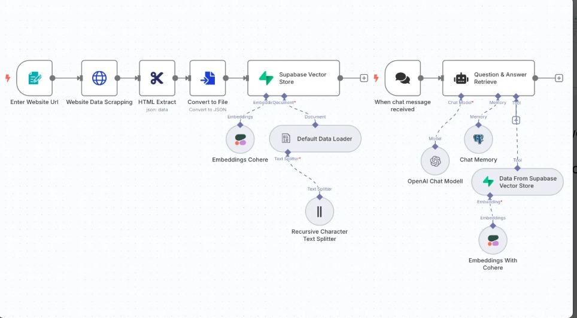
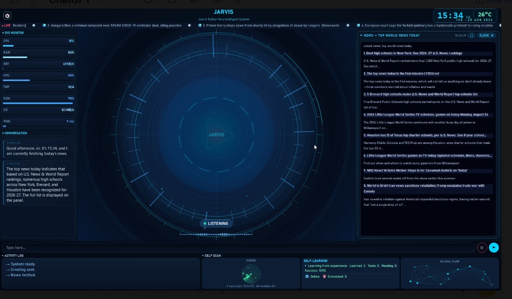
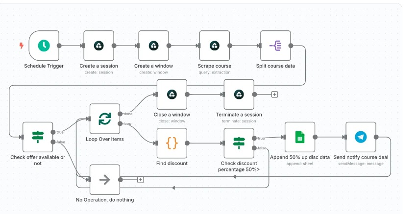
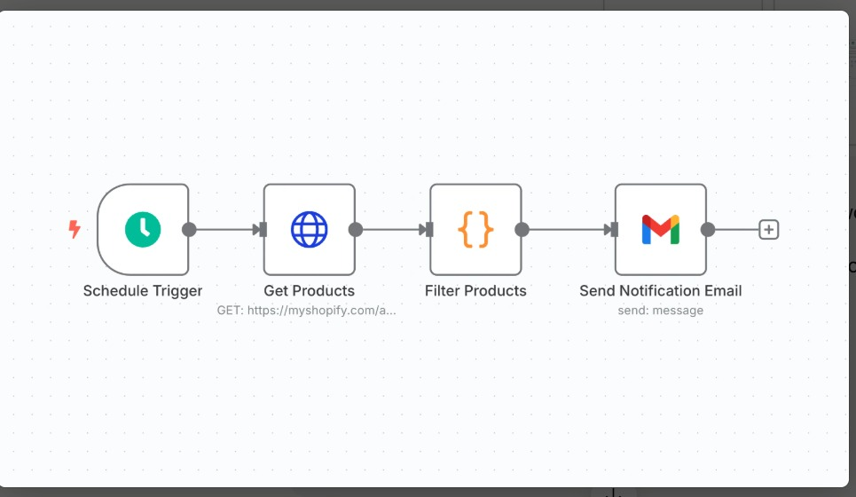
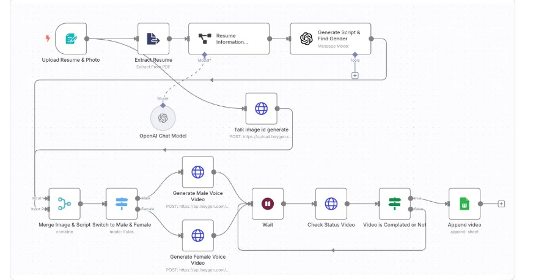

01
AI & workflow automation
Connect your tools and reduce repetitive work, from lead capture and follow-up to reporting and daily operations.
Discuss an automationIndependent automation & development studio
I turn disconnected tools into thoughtful systems. AI agents, automations, and websites built around your business—and the people behind it.
Your tools. Working together.
01 / What I do
Whether you're fixing a bottleneck or building something new, let's turn the next step into something practical.
Connect your tools and reduce repetitive work, from lead capture and follow-up to reporting and daily operations.
Discuss an automationBuild assistants that answer questions, work with your information, and take useful actions with clear boundaries.
Explore an AI assistantKeep enquiries organised and conversations moving with CRM pipelines, WhatsApp workflows, and booking integrations.
Improve your follow-upMake your business easier to understand and contact with a responsive website, landing page, or custom web tool.
Plan your websiteTranslate your trading rules into alerts, backtesting tools, journals, or bots with defined approval and risk controls.
Discuss your strategyTurn scattered data into useful reports, or build a custom integration that fits the way your team actually works.
Talk through your idea02 / Selected work
A closer look at my workflows and interfaces. Open a screenshot to explore the details.

VIEW SCREENSHOTA shipment workflow that checks details against carrier data, creates a PDF, emails the sender and receiver, and records updates in Google Sheets.
Discuss a similar project
VIEW SCREENSHOTWebsite content is collected, structured, and stored in Supabase. The question-answer workflow retrieves relevant information for an AI assistant with conversation memory.
Discuss a similar project
VIEW SCREENSHOTA custom assistant interface bringing conversation, a news panel, system information, and an activity log into one visual workspace.
Discuss a similar project
VIEW SCREENSHOTA scheduled workflow checks course listings, filters discounts of 50% or more, records matching deals in Google Sheets, and prepares Telegram notifications.
Discuss a similar project
VIEW SCREENSHOTA compact scheduled workflow retrieves Shopify product data, filters it against defined conditions, and sends an email notification for matching products.
Discuss a similar project
VIEW SCREENSHOTA résumé-and-photo workflow extracts information, prepares a script, requests an avatar video, checks processing status, and logs the finished video in Google Sheets.
Discuss a similar projectThe way a system thinks
Explore three illustrative workflows—from the first trigger to the next useful action.
Save the lead in your CRM and prepare a timely, relevant response.
03 / How we work
A practical process, with room for questions, feedback, and the details that make your project yours.
We discuss your goal, current tools, and what is slowing you down.
Agree on scope, deliverables, timeline, and cost before the build starts.
I build the solution, test the key flows, and work through your feedback.
You get a walkthrough and handover notes, with support agreed for your project.
04 / The person behind the hub
Founder, Consistently You Automation Hub
I bring a creative and analytical approach to building websites, automations, and custom tools. I like understanding how a business works before deciding what to build.
Consistently You started with a simple idea: make it easier to follow through. Today, that means connecting tools, organising information, and creating systems that help people spend more time on meaningful work.
A solution should fit your business and the people using it.
Understand what is being built, what it can do, and how to use it.
05 / A few useful answers
Often, yes. We'll review your current setup, available APIs, and integration options. The aim is to connect what you have where it makes sense, and explain any limitations before agreeing on the scope.
Yes. We can focus on one workflow, one landing page, or one specific issue, then discuss further work when the first piece is ready.
Pricing depends on the scope, complexity, integrations, and support you need. Tell me what you want to achieve and I'll put together a project-specific quote. Third-party subscriptions or hosting costs are discussed separately.
Your handover includes a walkthrough and practical notes for the agreed solution. Any ongoing maintenance or support is defined as part of the project.
Your main goal, the tools or website you currently use, what isn't working, and your preferred timeline. If you have a budget range, that helps us choose a realistic starting point.
06 / Your next step
Tell me about your idea, the task you're tired of doing manually, or the system that needs a little more thought.
Not sure where to start?
Describe the problem in your own words.